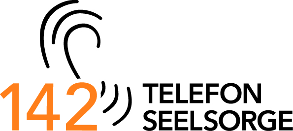
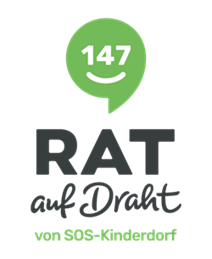
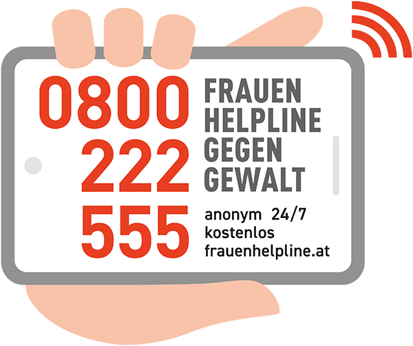

Wenn Sie sich in einer akuten Krise befinden und dringend Unterstützung brauchen , können Sie sich jederzeit an folgende Notrufnummern wenden. Alle Angebote sind rund um die Uhr kostenlos, anonym und vertraulich erreichbar.



Klinische Abteilung für Psychiatrie und psychotherapeutische Medizin
Akutversorgung im Krankenhaus für Menschen in psychischen oder medizinischen Krisen. Zuständig für die Bezirke Tulln, Wien-Umgebung (außer Schwechat), Krems (Stadt & Land), Korneuburg, Hollabrunn, Mistelbach und Gänserndorf.